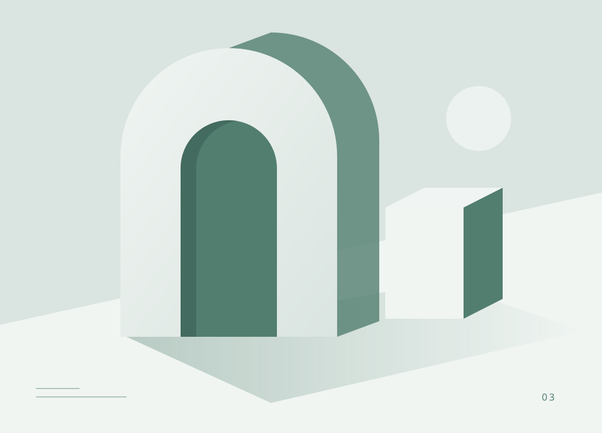

Журнал / сообщество читателей
Хорошие идеи
начинаются
с любопытства.

Читайте, исследуйте, находите своё.Рады видеть вас
Войдите в личный кабинет читателя.
Запомнить меня
Забыли пароль?Это вход для читателей. Редакция использует отдельный вход с MFA.
Впервые здесь? Создать аккаунт